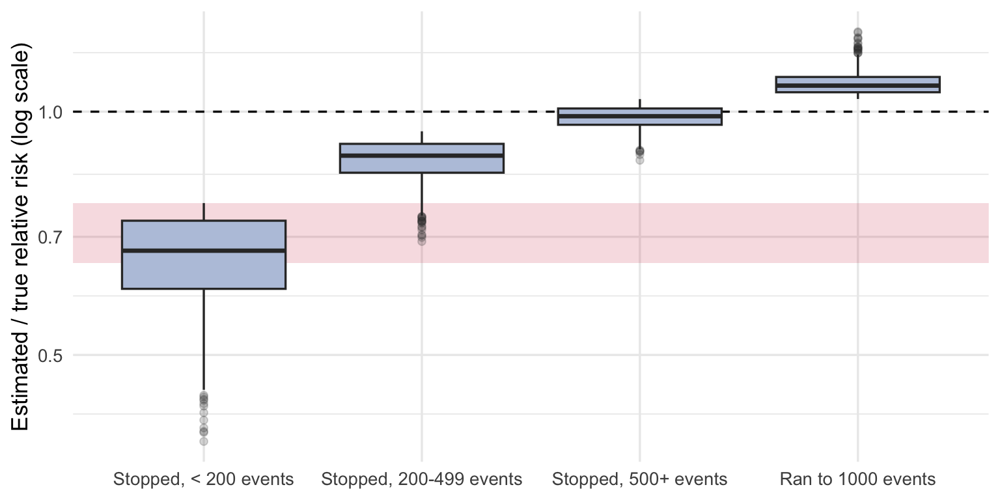
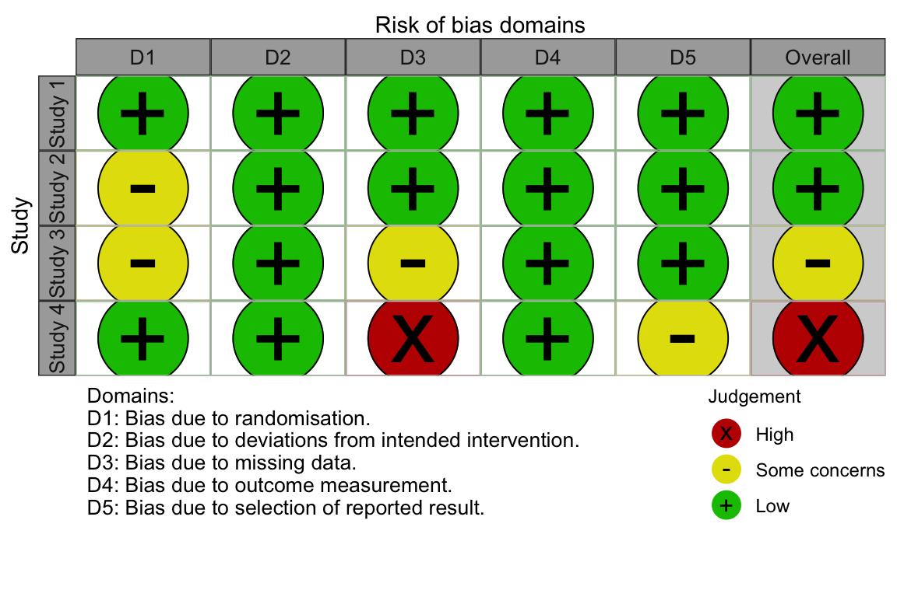
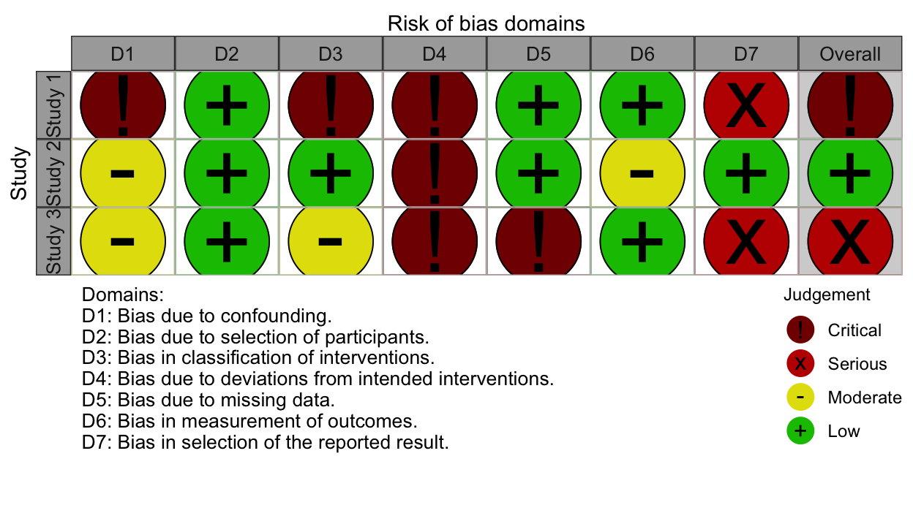
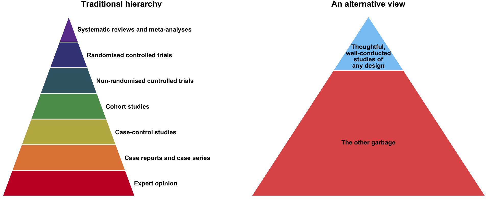

distinguish bias (systematic error) from imprecision (random error), and explain why more data cure only the second;
describe where bias enters a trial — design, conduct, analysis and reporting — and summarise the empirical evidence that it distorts results;
list the non-reporting biases that shape which evidence a review can find;
assess risk of bias with RoB 2 (randomised trials) and ROBINS-I (non-randomised studies), and display the judgements with robvis;
explain, through regression to the mean, why change-from-baseline analyses are inferior to analysis of covariance, and how missing outcome data can bias a trial;
describe the GRADE approach to rating the certainty of a body of evidence, and how it uses risk-of-bias judgements.
R packages:dplyr, tidyr, ggplot2, readr, robvis.
Data:data/ch05/absolute_judgements.csv, from the CAPphrase dataset (1).
Chapters 2 to 4 dealt with finding, selecting and displaying the evidence. Before the evidence is combined, each study must be appraised: how far can its result be trusted? This chapter introduces the tools for appraising individual studies (risk-of-bias assessment) and the framework for rating a whole body of evidence (GRADE). Chapter 6 applies GRADE domain by domain.
5.1 Bias and imprecision
A study’s estimate can be wrong for two reasons. Imprecision, or random error, makes estimates scatter around the truth; it shrinks as studies grow and is quantified by the standard error and confidence interval. Bias, or systematic error, makes estimates deviate from the truth in a consistent direction. Bias arises from flaws in a study’s design, conduct, analysis or reporting, and more data do not remove it: they only narrow the confidence interval around the wrong value (2).
The two are independent. A large trial can be precise and seriously biased; a small one can be imprecise but unbiased. This matters for synthesis: pooling biased studies in a meta-analysis produces an estimate that is precise but wrong.
Precisely wrong
A meta-analysis of biased trials is not high-quality evidence. It is a precise estimate of a biased quantity.
Assessments of bias are expressed in words — “low”, “some concerns”, “high” — and words are slippery. People attach very different probabilities to phrases such as “likely”, “a realistic possibility” or “little chance”. In an online survey, more than 5000 respondents assigned a percentage to each of 19 such phrases (1). Figure 5.1 summarises their answers.
Figure 5.1: Probability assigned to 19 verbal phrases by more than 5000 respondents: median (circle), interquartile range (coloured bar, darker red for wider ranges) and 10th to 90th percentiles (grey). Adapted from J. Lopes’ TidyTuesday visualisation ‘The Scale of Chaos’ (3); data from the CAPphrase dataset (1).
Half of respondents placed “realistic possibility” somewhere between 40% and 75%, and “might happen”, “may happen” and “could happen” were almost as diffuse. Risk-of-bias tools address this partly by fixing the categories and the rules for reaching them, but each judgement should still be accompanied by its reasons.
5.2 Where bias enters a trial
Bias can enter at each stage of a randomised trial:
Design. Inadequate generation of the random sequence or concealment of allocation lets investigators influence who receives which treatment, producing groups that differ at baseline (selection bias).
Conduct. If participants or personnel know the allocation, they may behave differently, for example by adding co-interventions (performance bias). If outcome assessors know it, they may measure or classify outcomes differently (detection bias). Losses to follow-up that differ between groups, or are related to the outcome, break the comparability created by randomisation (attrition bias).
Analysis. Analysing participants other than as randomised, choosing among several analyses after seeing the data, or using an analysis vulnerable to chance baseline imbalance (Section 5.6.1).
Reporting. Reporting only some outcomes or analyses, or not publishing at all, depending on the results (Section 5.4).
Figure 5.2 summarises these entry points and the tools that address each.
Figure 5.2: Where bias enters a trial, and the main tools that detect it.
Other recognised sources are stopping a trial early for benefit, which selects an extreme interim result; multiple testing without pre-specification (“p-hacking”) and hypothesising after the results are known; and conflicts of interest, which can operate through any of the mechanisms above.
Poor reporting is not the same as poor conduct
A well-conducted trial may be poorly reported, and a well-reported trial may have been badly conducted. Where a report is silent, look for the protocol, the register entry and, if necessary, ask the authors before judging.
5.3 Empirical evidence that bias matters
Meta-epidemiological studies compare trials with and without a given methodological flaw within the same meta-analyses, so that differences in clinical question do not explain the results. The result is a ratio of odds ratios (ROR): the odds ratio in flawed trials divided by that in sound trials. For outcomes coded so that an odds ratio below 1 favours the intervention, a ratio below 1 means that flawed trials show more benefit.
The first large study of this kind examined 250 trials from 33 meta-analyses in pregnancy and childbirth (4). Trials with inadequate allocation concealment had odds ratios 41% lower, that is, more beneficial, than adequately concealed trials (ROR 0.59), and trials that were not double blind 17% lower (ROR 0.83). Later and larger studies found smaller average biases but confirmed the direction, and showed that the bias is concentrated in trials with subjectively assessed outcomes(5,6). Combining seven meta-epidemiological studies (1973 trials in 234 meta-analyses), (6) estimated RORs of 0.89 for inadequate or unclear sequence generation, 0.93 for allocation concealment and 0.87 for lack of double blinding. Figure 5.3 shows these estimates together.
Figure 5.3: Ratios of odds ratios comparing trials with and without each flaw, from three meta-epidemiological studies. Values below 1 mean that flawed trials report more benefit. Data from (4) (adapted from its Table 2), (5) and (6) (95% credible intervals).
Two other sources of bias are well documented.
Funding. In a systematic review of 30 studies, industry-sponsored research was about four times as likely as other research to report outcomes favourable to the sponsor (odds ratio 4.05, 95% CI 2.98 to 5.51) (7). A later Cochrane methodology review of 75 papers estimated more modest but consistent associations, expressed as risk ratios: favourable efficacy results 1.27 (1.17 to 1.37) and favourable conclusions 1.34 (1.19 to 1.51), with no clear difference for harms (8) (Figure 5.4). Notably, industry-sponsored studies were not at higher risk of bias on the standard domains, so the usual tools do not capture this influence. Many mechanisms can contribute without any dishonesty: choice of comparator and dose, selection of outcomes and patients, selective publication, framing (“spin”) and stopping early.
Figure 5.4: Association between industry sponsorship and favourable results. Data from (7) (odds ratio) and (8) (risk ratios); the two measures are not directly comparable.
Stopping early for benefit. Comparing 91 trials stopped early for benefit with 424 trials of the same questions that were not, (9) found a pooled ratio of relative risks of 0.71 (95% CI 0.65 to 0.77): stopped trials reported effects roughly 30% more extreme. The difference was largest when fewer than 500 events had accrued, and it was present whether or not a formal stopping rule had been used. The mechanism is selection. A trial is stopped when an interim estimate crosses a boundary, and interim estimates cross it most easily when chance has pushed them towards benefit. A simulation reproduces the pattern (Figure 5.5).
Code
# Normal approximation on the log RR scale: with D events, var(log RR) is about 4 / Done_sequential_trial <-function(true_rr =0.8, looks =seq(50, 1000, by =50),z_stop =-2.96) { info <- looks /4# statistical information inc <-rnorm(length(looks), log(true_rr) *diff(c(0, info)), sqrt(diff(c(0, info)))) score <-cumsum(inc) z <- score /sqrt(info) k <-which(z < z_stop)[1] # first look crossing the boundary stopped <-!is.na(k)if (!stopped) k <-length(looks)c(events = looks[k], stopped = stopped, rr_hat =exp(score[k] / info[k]))}set.seed(2010)seq_trials <-as.data.frame(t(replicate(5000, one_sequential_trial()))) |>mutate(ratio = rr_hat /0.8,group =case_when(!stopped ~"Ran to 1000 events", events <200~"Stopped, < 200 events", events <500~"Stopped, 200-499 events",TRUE~"Stopped, 500+ events"),group =factor(group, c("Stopped, < 200 events", "Stopped, 200-499 events","Stopped, 500+ events", "Ran to 1000 events")))ggplot(seq_trials, aes(group, ratio)) +annotate("rect", xmin =-Inf, xmax =Inf, ymin =0.65, ymax =0.77,fill ="#C8102E", alpha =0.15) +geom_hline(yintercept =1, linetype ="dashed") +geom_boxplot(outlier.alpha =0.2, fill ="#B9C6DE") +scale_y_log10() +labs(x =NULL, y ="Estimated / true relative risk (log scale)")

Figure 5.5: Simulated trials with a true relative risk of 0.80, analysed after every 50 events and stopped for benefit if Z < -2.96 (two-sided P < 0.003), with a maximum of 1000 events. Each box shows the ratio of the estimated to the true relative risk. The shaded band is the pooled ratio (95% CI) reported by (9) for truncated trials.
Trials stopped with fewer than 200 events overestimated the benefit by about 36% on average, close to the empirical estimate, while trials stopped late were nearly unbiased. Note that every trial in the simulation was impeccably randomised and blinded: the bias is produced by the stopping decision alone. Trials that continue to their planned end are slightly less favourable than the truth, because the most favourable sequences were removed by stopping; pooled with weights proportional to their information, as a fixed-effect meta-analysis does, all 5000 simulated trials give a ratio of 0.999. This is one reason not to exclude stopped trials from a meta-analysis, but to check whether they dominate it.
Key point
Flaws in design and conduct exaggerate treatment effects on average, especially for subjective outcomes. Risk-of-bias assessment is therefore not a formality: it identifies the studies whose results are most likely to be inflated.
5.4 Non-reporting biases
A second layer of bias acts before any study is appraised: the selective availability of results. Table 5.1 summarises the main types (10).
Table 5.1: Non-reporting biases.
Bias
Definition
Main defences
Publication bias
Whether results are published depends on their direction or significance
Favourable results are more likely to appear in English-language journals
Searching without language restrictions
Citation bias
Favourable studies are cited more often, and so found more easily
Systematic database searching, not citation chasing alone
Multiple publication bias
Favourable results are published more than once
Linking reports to studies by registration number (Section 3.6)
Location bias
Favourable results appear in more accessible, better-indexed journals
Searching several databases and the grey literature
Selective outcome reporting
Within a published study, only favourable outcomes or analyses are reported
Comparing paper with register and protocol (Section 3.6.1)
These biases distort the evidence base independently of how well the included studies were conducted. Comprehensive searching (Chapter 2) is the main defence; the ROB-ME tool provides a structured way to assess the risk of bias due to missing evidence in a synthesis (11).
5.5 Assessing risk of bias
5.5.1 RoB 2 for randomised trials
The Cochrane risk-of-bias tool for randomised trials, RoB 2, assesses bias in five domains (12,13):
bias arising from the randomisation process (sequence generation, allocation concealment, baseline imbalances);
bias due to deviations from intended interventions (blinding, co-interventions, and whether an appropriate analysis was used to estimate the effect of assignment);
bias due to missing outcome data;
bias in measurement of the outcome (including whether assessors knew the allocation);
bias in selection of the reported result (from multiple outcome measurements or analyses).
Each domain contains signalling questions (answered yes, probably yes, probably no, no or no information) that lead, through an algorithm, to a judgement of low risk, some concerns or high risk. The overall judgement is low only if every domain is low; it is high if any domain is high, or if several domains raise some concerns that together substantially lower confidence in the result.
Three features of RoB 2 are easy to forget:
It assesses a result, not a study. The same trial can be at low risk of bias for mortality and high risk for a patient-reported outcome.
It requires the reviewer to state the effect of interest: the effect of assignment to the intervention (intention to treat) or of adhering to it. The appropriate analyses differ.
It is about bias, not reporting quality or imprecision. “Some concerns” should reflect genuine doubt about how the trial was conducted, not merely an omitted detail that could have been found in the protocol.
5.5.2 ROBINS-I for non-randomised studies
For non-randomised studies of interventions, ROBINS-I compares each study with a hypothetical target trial (Section 3.2.1) across seven domains: confounding, selection of participants, classification of interventions, deviations from intended interventions, missing data, measurement of outcomes and selection of the reported result (14). Judgements are low, moderate, serious or critical risk of bias. ROBINS-I is not simply RoB 2 for observational studies: confounding has its own domain because, without randomisation, it is the main threat to validity, and misaligned time zero is assessed under the selection and classification domains.
5.5.3 Displaying the judgements in R
The robvis package draws the standard displays from a data frame with one row per study and one column per domain (15). It includes example data for both tools. Figure 5.6 shows the “traffic-light” plot of individual judgements and Figure 5.7 the summary across studies, in which each bar shows the proportion of studies (optionally weighted) at each level of risk.
Code
rob_traffic_light(data_rob2[1:4, ], tool ="ROB2")

Figure 5.6: RoB 2 judgements for four example trials (robvis example data).
Code
rob_summary(data_rob2, tool ="ROB2")
Figure 5.7: Summary of RoB 2 judgements across the example trials.
The same functions work for ROBINS-I with tool = "ROBINS-I" and the seven ROBINS-I domains (Figure 5.8).
Code
# The example data are called data_robins in robvis 0.3.0 (CRAN), data_robins_i in later versionsrobins_example <-if (exists("data_robins_i")) data_robins_i else data_robinsrob_traffic_light(robins_example[1:3, ], tool ="ROBINS-I")

Figure 5.8: ROBINS-I judgements for three example non-randomised studies.
If the extraction sheet (Section 3.4.2) stores the domain judgements in this format, the figure is a single line of code.
5.6 Case study: the STRIDE trial
STRIDE randomised 792 adults with type 2 diabetes and symptomatic peripheral artery disease (intermittent claudication) to weekly semaglutide or placebo for 52 weeks (16). The primary outcome was the ratio of maximum walking distance on a treadmill at week 52 to its value at baseline. The trial was double blind, funded by the manufacturer, and reported as positive (Table 5.2).
Code
stride_tab <-data.frame(``="Maximum walking distance at week 52, ratio to baseline",Semaglutide ="n = 338; 1.21 (0.95 to 1.55)",Placebo ="n = 345; 1.08 (0.86 to 1.36)",`ETR (95% CI)`="1.13 (1.06 to 1.21)",P ="0.0004", check.names =FALSE)kable(stride_tab)
Table 5.2: STRIDE primary endpoint. Adapted from Table 2 of (16). Medians (IQR) are observed; the estimated treatment ratio (ETR) is from the trial’s model.
Semaglutide
Placebo
ETR (95% CI)
P
Maximum walking distance at week 52, ratio to baseline
n = 338; 1.21 (0.95 to 1.55)
n = 345; 1.08 (0.86 to 1.36)
1.13 (1.06 to 1.21)
0.0004
Two features deserve a closer look: an outcome expressed relative to each participant’s baseline, and the participants who are missing from the table (396 were randomised to each arm).
5.6.1 Change from baseline and regression to the mean
Any measurement made once contains measurement error and day-to-day variation. Participants whose baseline value happened to be unusually low will, on average, score higher when measured again even if nothing has changed: regression to the mean(17). In a randomised trial this matters through chance baseline imbalance. Randomisation makes the arms comparable on average, but in any one trial their baseline means differ a little. (18) show what follows:
An analysis of follow-up values only ignores the imbalance. If the treated arm happened to start worse, the treatment effect is underestimated.
An analysis of change from baseline (or of a ratio to baseline) over-corrects. The arm that started worse is expected to improve more by regression to the mean alone, so the treatment effect is overestimated. Analysing change does not control for baseline imbalance, because of regression to the mean.
Analysis of covariance (ANCOVA), which regresses the follow-up value on treatment and baseline, adjusts by the amount the data indicate and is unaffected by the imbalance. It is also the most precise of the three.
Each analysis is unbiased when averaged over all possible randomisations; the difference is in how each behaves given the imbalance that actually occurred, which is the trial that readers see. (19) gives further reasons to avoid change scores: subtracting the baseline assumes that follow-up and baseline are on the same scale with a slope of exactly 1, that the change is unrelated to the baseline value, and that there are no floor or ceiling effects.
A simulation shows all three behaviours. We generate many trials with a true treatment effect of 10 m on walking distance, with baseline and follow-up both measured with error, and analyse each trial three ways.
All three analyses are unbiased on average: the mean estimates are close to the true 10 m. ANCOVA is the most precise (standard deviation of the estimates 2.7 m, against 3.0 m for change scores and 3.6 m for follow-up values), so it needs the fewest participants for the same power. More important for the reader of a single trial, the follow-up and change-score estimates depend on the chance baseline imbalance, in opposite directions (Figure 5.9).
Figure 5.9: Estimated treatment effect against the chance difference in observed baseline means (treated minus control), in 2000 simulated trials with a true effect of 10 m (dashed line). Follow-up-only estimates rise and change-score estimates fall as the treated arm’s baseline rises; ANCOVA estimates do not depend on it.
The slopes have a simple explanation. Follow-up values depend on true baseline, and only a fraction of an observed baseline difference is real: the reliability of the baseline measurement, here 0.64. The follow-up-only analysis ignores the baseline (it implicitly multiplies it by 0) and so inherits a slope of about 0.65. The change-score analysis subtracts the whole observed baseline (it multiplies it by 1), over-correcting by the unreliable part, and inherits a slope of about -0.35: in a trial whose treated arm happened to start 5 m lower, it overstates the effect by about 1.8 m. ANCOVA estimates the multiplier from the data, close to the reliability, and its estimates do not drift with the imbalance. The over-correction of the change score is regression to the mean: the arm with the lower observed baseline regresses upwards.
5.6.2 Did STRIDE analyse change?
A ratio to baseline sounds like a change score, so one might conclude that STRIDE’s result is vulnerable to regression to the mean. The protocol and the paper say otherwise. Walking distances were log-transformed and analysed with a mixed model for repeated measures that included the log baseline distance as a covariate (16,20). On the log scale a ratio to baseline is a difference, \(\log(Y/B) = \log Y - \log B\), and once \(\log B\) is in the model as a covariate, analysing \(\log(Y/B)\) or \(\log Y\) gives the same treatment estimate; only the coefficient of \(\log B\) changes, by exactly 1. The estimated treatment ratio is therefore an ANCOVA-type, baseline-adjusted estimate. We can check the identity on one simulated trial:
Code
set.seed(2025)n <-396trial_rtb <- tibble::tibble(treat =rep(0:1, each = n),true_bl =rlnorm(2* n, log(185), 0.4),baseline = true_bl *exp(rnorm(2* n, sd =0.2))) |>mutate(week52 = true_bl *exp(log(1.13) * treat +rnorm(2* n, sd =0.2)))fit_ratio <-lm(log(week52 / baseline) ~ treat +log(baseline), data = trial_rtb)fit_level <-lm(log(week52) ~ treat +log(baseline), data = trial_rtb)rbind(ratio_outcome =coef(fit_ratio), level_outcome =coef(fit_level)) |>round(4)
The treatment coefficients are identical (exponentiated, an estimated ratio of 1.14); only the baseline coefficients differ, by 1. The medians in Table 5.2, by contrast, are unadjusted summaries of each arm and should not be compared directly. The lesson is general: the label of an outcome does not tell you how it was analysed. Before judging an analysis, read the statistical methods and, where available, the protocol and analysis plan.
5.6.3 Missing outcome data
The primary outcome at week 52 was available for 338 of 396 participants (85%) in the semaglutide arm and 345 of 396 (87%) in the placebo arm (Table 5.2). Losses of this size are common, but they matter if the reasons for missing data are related to the outcome, for example if participants whose claudication worsened, or who could not tolerate the drug, were less likely to attend the final treadmill test.
How much could that change the result? A simple sensitivity analysis removes the 15% of participants with the least favourable results in one arm and the most favourable in the other, the worst pattern for an honest comparison.
Code
set.seed(2028)n <-396trial <-tibble(treat =rep(0:1, each = n),baseline =rnorm(2* n, 185, 40) +rnorm(2* n, sd =30)) |>mutate(followup = baseline +10* treat +rnorm(2* n, sd =35))fit_full <-coef(lm(followup ~ treat + baseline, data = trial))["treat"]# Extreme scenario: the worst 15% of treated and the best 15% of controls go missingtrial_obs <- trial |>mutate(gain = followup - baseline) |>group_by(treat) |>arrange(if_else(treat ==1, -gain, gain), .by_group =TRUE) |>slice_head(prop =0.85) |>ungroup()fit_miss <-coef(lm(followup ~ treat + baseline, data = trial_obs))["treat"]round(c(complete_data = fit_full, after_selective_loss = fit_miss), 1)
With complete data the estimate is close to the true 10 m. If 15% of each arm were lost in the most unfavourable way, the estimate would be 28 m. This extreme scenario is not a claim about what happened in STRIDE; it is a bound on what could have happened, and it shows why RoB 2 asks whether missingness could depend on the true value of the outcome. Methods for handling missing data are developed in Chapter 14.
5.6.4 A RoB 2 assessment
Figure 5.10 summarises one reviewer’s RoB 2 assessment of the primary outcome. Randomisation was well conducted and the trial was double blind, so neither participants nor those supervising the treadmill test knew the allocation (domains 1, 2 and 4 at low risk). About 15% of outcome data were missing, and withdrawal could plausibly be related to walking capacity (domain 3, high risk). A reviewer persuaded by the trial’s sensitivity analyses for missing data could reasonably judge this domain “some concerns” instead; the reasons matter more than the label. The primary outcome and its baseline-adjusted analysis were pre-specified in the protocol, but walking distance was analysed under several estimands and time points (domain 5, some concerns).
Figure 5.10: An illustrative RoB 2 assessment of STRIDE’s primary outcome.
Note what the assessment does not capture. Had STRIDE analysed unadjusted change scores, the resulting sensitivity to chance baseline imbalance (Section 5.6.1) would not fit neatly into any RoB 2 domain (it is a matter of precision and conditional bias rather than systematic error); it would be raised under domain 5 only if a baseline-adjusted analysis had been performed and not reported. Otherwise it is a weakness the reviewer must flag in the text. STRIDE avoided it by adjusting for baseline (Section 5.6.2). Risk-of-bias tools structure judgement; they do not replace it.
Key point
Assess risk of bias for each result, give reasons for each judgement, and report weaknesses that the tool’s domains do not capture.
5.7 Introduction to GRADE
5.7.1 From study-level bias to outcome-level certainty
Risk-of-bias tools judge individual results. Decisions need a judgement about a body of evidence: how confident can we be in the pooled effect on a given outcome? The GRADE approach (Grading of Recommendations Assessment, Development and Evaluation) provides that judgement in a structured, transparent way, and is used by Cochrane, the WHO and most guideline developers (21,22).
Table 5.3: Risk-of-bias tools and GRADE.
Risk-of-bias tool
GRADE
Assesses
Bias in a study’s result
Certainty in a body of evidence
Level
Each study, for each result
Each outcome, across studies
Considers
Internal validity
Risk of bias, inconsistency, indirectness, imprecision, publication bias
Output
Low / some concerns / high
High / moderate / low / very low
The two are complementary, not alternatives: risk-of-bias judgements are the input to the first GRADE domain. In a culinary analogy, the risk-of-bias tool inspects each ingredient; GRADE judges whether the finished dish can be trusted.
We are very confident that the true effect lies close to the estimate
Moderate
⊕⊕⊕◯
The true effect is likely to be close to the estimate, but may be substantially different
Low
⊕⊕◯◯
The true effect may be substantially different from the estimate
Very low
⊕◯◯◯
The true effect is likely to be substantially different from the estimate
The workflow, for each outcome:
Assess risk of bias in each study’s result (RoB 2 or ROBINS-I).
Synthesise the results (meta-analysis or structured narrative synthesis).
Start at high certainty for randomised trials, low for observational studies.
Rate down by one level (serious concern) or two (very serious) for each of five domains: risk of bias, inconsistency, indirectness, imprecision and publication bias.
Rate up observational evidence, if no reason to rate down remains, for a large effect, a dose–response gradient, or plausible residual confounding that would have reduced the observed effect.
Report the final certainty with an explicit reason for every change.
Ratings are made per outcome: the same review can provide high-certainty evidence for mortality and very low certainty for quality of life. Downgrades in different domains accumulate, but the same problem should not be counted twice. Chapter 6 works through each domain with real data and shows how the results are presented in a summary-of-findings table.
Study design is a starting point, not a verdict
Starting randomised trials at high certainty does not mean that every trial result is trustworthy, and starting observational studies at low does not mean they are uninformative. The rest of GRADE exists to move the rating to where the evidence actually belongs.
The traditional “evidence pyramid” ranks study designs from expert opinion at the bottom to systematic reviews and meta-analyses at the top (Figure 5.11, left). It is a useful mnemonic for where GRADE starts, but it is a poor guide to where it ends. (24) proposed redrawing it with wavy boundaries between designs, to show that a design’s position can move with its risk of bias, inconsistency, indirectness and imprecision, and with systematic reviews removed from the top and used as a lens through which the other designs are viewed. Others have been blunter (Figure 5.11, right).
Code
levels_trad <-c("Expert opinion","Case reports and case series", "Case-control studies","Cohort studies", "Non-randomised controlled trials","Randomised controlled trials","Systematic reviews and meta-analyses")band <-function(i, n) { # trapezium i (1 = bottom) of a pyramid of n bands y0 <- (i -1) / n; y1 <- i / ndata.frame(x =c(-(1- y0), 1- y0, 1- y1, -(1- y1)) /2, y =c(y0, y0, y1, y1))}trad <-do.call(rbind, lapply(seq_along(levels_trad), function(i)cbind(band(i, length(levels_trad)), id = i, panel ="Traditional hierarchy")))labs_trad <-data.frame(y = (seq_along(levels_trad) -0.5) /length(levels_trad),label = levels_trad, panel ="Traditional hierarchy") |>mutate(x = (1- y) /2+0.03) # just right of each bandalt <-rbind(data.frame(x =c(-0.5, 0.5, 0.15, -0.15), y =c(0, 0, 0.7, 0.7), id =1),data.frame(x =c(-0.15, 0.15, 0, 0), y =c(0.7, 0.7, 1, 1), id =2)) |>mutate(panel ="An alternative view")labs_alt <-data.frame(x =0, y =c(0.3, 0.78),label =c("The other garbage","Thoughtful,\nwell-conducted\nstudies of\nany design"),panel ="An alternative view")pyr <-rbind(trad, alt) |>mutate(panel =factor(panel, c("Traditional hierarchy", "An alternative view")),fill =case_when(panel =="An alternative view"& id ==1~"#E05A55", panel =="An alternative view"~"#87C8F5",TRUE~colorRampPalette(c("#C8102E", "#F2C14E", "#5B9B5B","#2C4A7E", "#6A3D9A"))(7)[id]))ggplot(pyr, aes(x, y)) +geom_polygon(aes(group = id, fill = fill), colour ="white") +geom_text(data =rbind(labs_trad, labs_alt) |>mutate(panel =factor(panel, levels(pyr$panel))),aes(label = label, hjust =ifelse(panel =="Traditional hierarchy", 0, 0.5)),size =3.2, lineheight =0.85, fontface ="bold", colour ="black") +scale_fill_identity() +facet_wrap(~ panel, scales ="free_x") +scale_x_continuous(expand =expansion(add =c(0.02, 0.02))) +geom_blank(data =data.frame(x =c(-0.5, 1.3), y =0, panel ="Traditional hierarchy") |>mutate(panel =factor(panel, levels(pyr$panel)))) +theme_void() +theme(strip.text =element_text(size =12, face ="bold"))

Figure 5.11: Left: a traditional hierarchy of evidence by study design. Right: an alternative pyramid, adapted from a post by Darren Dahly (25). GRADE sits between the two: design sets the starting point, and the quality of the specific studies decides the rating.
Key points
Bias is systematic error: more data narrow the confidence interval around the wrong value.
Inadequate randomisation, allocation concealment and blinding exaggerate treatment effects, especially for subjective outcomes; industry funding and early stopping are also associated with more favourable results, and early stopping does so even in impeccably conducted trials.
Non-reporting biases shape the evidence base before any study is appraised.
RoB 2 and ROBINS-I assess the risk of bias in each result, domain by domain, with explicit reasons; robvis displays the judgements.
Analyses of change from baseline over-correct for chance baseline imbalance, because of regression to the mean; analyses of follow-up alone under-correct. ANCOVA adjusts correctly and is the most precise. Check how a trial actually analysed its outcome before judging it: STRIDE’s ratio to baseline was analysed with baseline adjustment.
GRADE rates the certainty of a body of evidence for each outcome, using risk-of-bias judgements as one of five domains.
Exercises
Using the RoB 2 signalling questions (12), assess the risk of bias in the primary outcome of EMPEROR-Reduced (26) (registration NCT03057977). Record a reason for each domain judgement. A worked answer is given in Section 6.1.
Change the measurement error in one_trial() (the sd of the baseline error) to 0, then to 60. How do the precision of the three analyses and the slopes in Figure 5.9 change? Relate your answer to the reliability of the baseline measurement.
In stride-identity, drop log(baseline) from both models. Do the treatment estimates still agree? Which analysis does each model now correspond to?
In the missing-data example, how large would the losses have to be for the estimated effect to disappear?
Find a published trial with a subjective primary outcome that was not blinded. Which RoB 2 domains are affected, and how would you judge them?
Further reading
(2) and (13): Chapters 7 and 8 of the Cochrane Handbook, on bias and on RoB 2.
Boutron I, Page MJ, Higgins JPT, Altman DG, Lundh A, Hróbjartsson A. Chapter 7: Considering bias and conflicts of interest among the included studies. In: Cochrane handbook for systematic reviews of interventions [Internet]. Cochrane; 2024. Available from: https://training.cochrane.org/handbook/current/chapter-07
3.
Lopes J. The scale of chaos: How much does a probability phrase actually mean? TidyTuesday 2026, week 10 (data visualisation); 2026.
Page MJ, Higgins JPT, Sterne JAC. Chapter 13: Assessing risk of bias due to missing evidence in a meta-analysis. In: Cochrane handbook for systematic reviews of interventions [Internet]. Cochrane; 2024. Available from: https://training.cochrane.org/handbook/current/chapter-13
Harrell FEJ. Transformations, measuring change, and regression to the mean [Internet]. Chapter 14 in Biostatistics for Biomedical Research; 2025. Available from: https://hbiostat.org/bbr/change
20.
Novo Nordisk. A research study to compare a medicine called semaglutide against placebo in people with peripheral arterial disease and type 2 diabetes (STRIDE): protocol [Internet]. ClinicalTrials.gov NCT04560998; 2020. Available from: https://cdn.clinicaltrials.gov/large-docs/98/NCT04560998/Prot_000.pdf
Schünemann HJ, Higgins JPT, Vist GE, Glasziou P, Akl EA, Skoetz N, et al. Chapter 14: Completing “summary of findings” tables and grading the certainty of the evidence. In: Cochrane handbook for systematic reviews of interventions [Internet]. Cochrane; 2024. Available from: https://training.cochrane.org/handbook/current/chapter-14